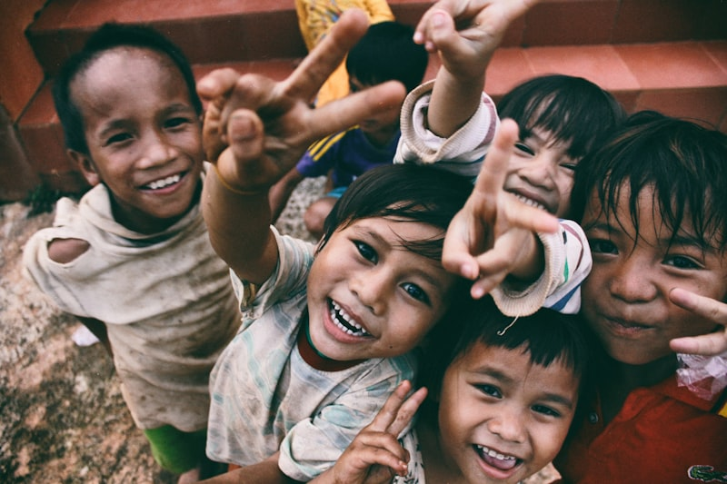
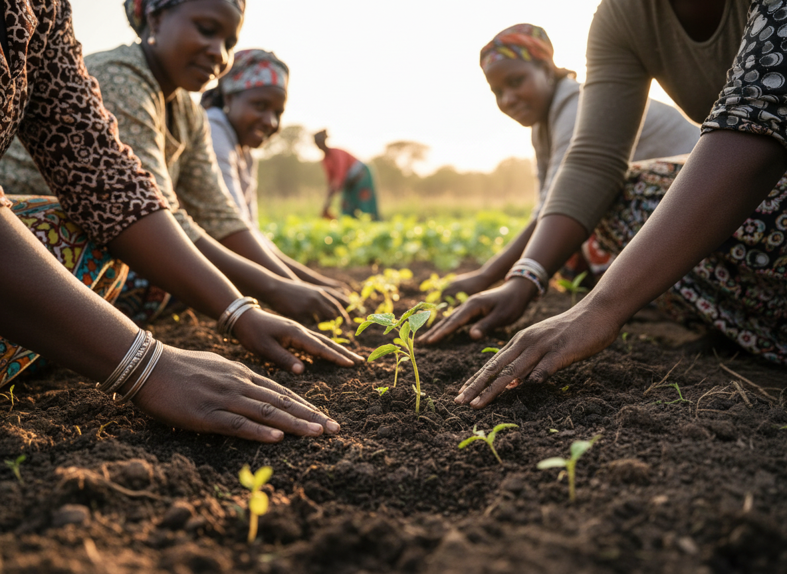

The Seed Guardian
Miriam
Makueni
Saving indigenous seeds and helping women establish community seed banks rooted in local memory.

Community leaders, seed keepers, city gardeners, and innovators turning local knowledge into practical solutions.
The Seed Guardian
Makueni
Saving indigenous seeds and helping women establish community seed banks rooted in local memory.

The Forest Restorer
Nyandarua
Restoring degraded landscapes through community planting, care, and intergenerational knowledge.

The Regenerative Farmer Lead
Nakuru
Transforming degraded farms into regenerative food systems that nourish households and soil.

The City Gardener
Nairobi
Growing cleaner, cooler urban spaces through gardens, trees, and practical city food systems.
The Circular Innovator
Nairobi
Turning organic waste and discarded materials into enterprise, compost, art, and useful products.

People Advisory Board
Across Kenya
Guiding Homegrown's work with lived knowledge, accountability, and local leadership.
Volunteer, partner, or support the people growing local solutions.